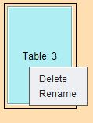
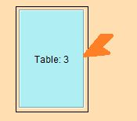
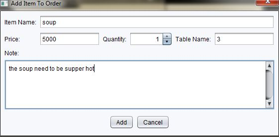
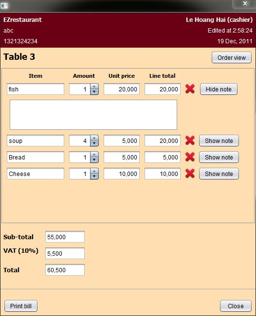
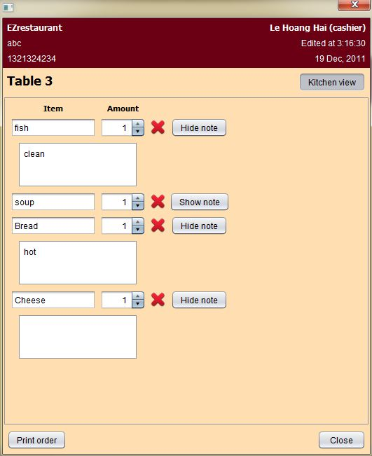
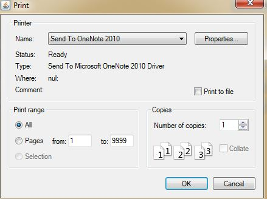

Cashiers have servral functions to interact with orders for tables, checking bills,arrange tables's position, printng orders to kitchen...This page could be consider as a common page for cashiers and managers because it contains some functions which cashiers and managers have permission to do.
General View
The screen shot is splited into two parts: menu which contains categories and menu items on the left, on the right hand side will be the table map area. In the menu area, cashiers can see categories are marked as blue color and menu items are light grey. On the right hand side, table are classified into two type : one is carrying order (marked as blue) and one is not (marked as light grey).

Add Table (Drag and Drop)

This button used to drap and drop table. When cashiers want to create new table. They just simply need to drag this button to the location they want to drop on the restaurant map and release mouse there. Then a table will appear on the screen like the image above .
Delete Table/Edit Table's Name

When cashiers right click into a specific table. There will two options for cashiers to choose : delete or rename .
- Delete: when delete is chosen, the table will be delete.
- Rename: there will be a pop up for changing table's name. Users change the table name and click ok or cancel to finish action.

Move and Resize Table
- Move a table: cashiers just simply move mouse to the middle of a table , click on that table and drag to new position, then release mouse. The table is moved to new loction on the screen. However, tables can not overlap each other, so program will report error if that situation happen.
- Resize a table: 
users need to put the mouse right at the border of a tabel to resize it.

Then, table will change into this shape. Cashiers can use the small rectangles to change the size of a table.
Add Menu Item to Order (Drag and Drop)
The same with table , cashier pick a menu item they want and drag drop it to a table. Then a pop up will show up to add menu item to the current order of that table. 
The cahsiers fill in the data to the form and click save or cancel to finish the action.
View Order

To view order of a table , users just double click to a specific table . Then an order view will be showed up on the screen (if the table has no order, it will be written as " This table is vacant").
At the header of an order, you can see detail of restaurant on the left and cahiser name , date and time edit on the right hand side.
A note could be hide or showed button alternatively.
In order view, we can see the price will be calculated in detail like line total, sub-total, VAT and the final bill.
Delete menu Item
To delete a menu item in an order, user just need cilck to the "X" button which right next to the menu item in the order view they want to delete.
View/Edit Menu Item, note of a current order
Users just need to open the order view. Then , they can view, edit the information of the current order which belong to a specific table in the restaurant.
Kitchen View

To see the kitchen view, users just need to click on the "order view" button in the order view. Then the order-view will be change into kitchen-view accordingly.
Kitchen-view is almost the same with order-view. However, it just only care about the menu item for the chef to cook , not caring about the price or total bill. So anything related to money will be omited in the kitchen-view.
Print Order to Kitchen and Print Bill


When cahisers click into these two button in order or kitchen -view , program will jump user to the printing window pop up :
The differences between print bill and print order is the format out-put. One will carrying the price , total bill. One is not.